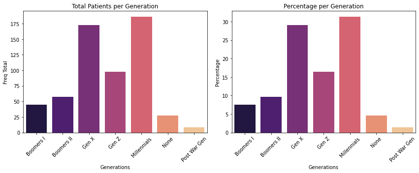
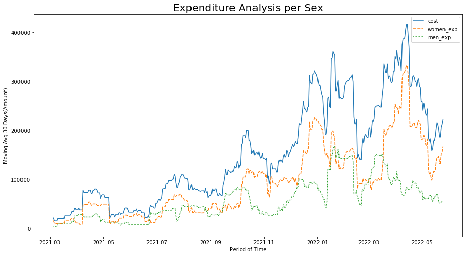
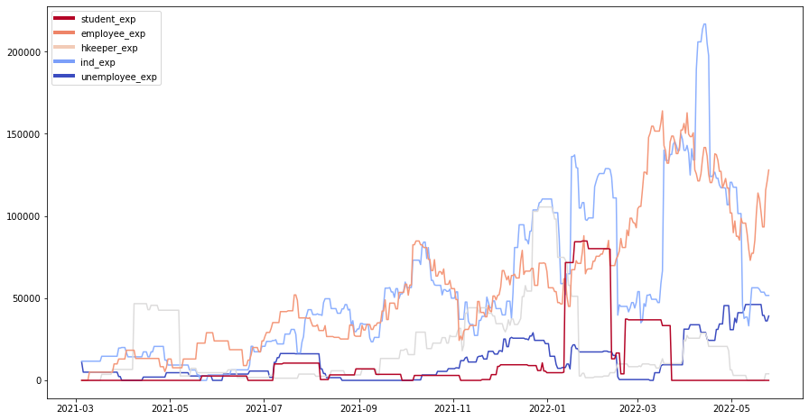
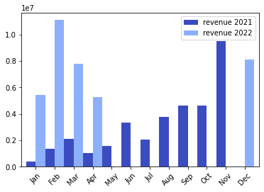

Dental Office 🦷🪥
Contents

Dental Office 🦷🪥¶
Business Analysis 📈
I’d like to say that for the last two years, I’ve been freelance working in a dental office. I really didn’t study any similar to it. I have no practical knowledge on, notwithstanding I have taken part in managing data. In other words, I know we should take care of patients data and manipulate it wisely. Process, understand and interpret data is important in the decision-making process so we can know who is visiting us and measure the impact it generates on business profits.
Data source📔¶
The database that we query in this analysis is temporarily hosted on an Azure IaaS service, specifically Azure Data Base for PostgreSQL, so if you try to connect to it, you won’t have access given that the information is sensitive and must be protected.

Connect DataBase/Python¶
Psycopg is the most popular PostgreSQL database adapter for python and all we need to do is import psycopg2 instantiate connect and indicate server-general information easily obtained from azure.
#We'll use pandas and numpy for data manipulation
import pandas as pd
import numpy as np
#We use seaborn and matplotlib to plot the data
import seaborn as sns
import matplotlib.pyplot as plt
#Library to connect with postgresql
import psycopg2
#Establish connection with server adminsql@az-postgresql-server host on azure as IaaS
conn_sql = psycopg2.connect(user = "adminsql@az-postgresql-server",
password = "CEdndm1246",
host = "az-postgresql-server.postgres.database.azure.com",
port = "5432",
database = "postgres")
Database Query¶
The database is made up of eleven tables, however, only three are dependent and the remaining eight are independent, which means that it is a low-complexity database where the patient table is connected to the treatment table through the transition table patient_treatment and that’s it, as shown below the query indicates the type of JOIN and the aliases given to each column.## Database Query
The database is made up of eleven tables, however, only three are dependent and the remaining eight are independent, which means that it is a low-complexity database where the patient table is connected to the treatment table through the transition table patient_treatment and that’s it, as shown below the query indicates the type of JOIN and the aliases given to each column.
query_sql = '''
SELECT date AS "appointment day", hour AS "appointment hour",
LOWER(f_name) AS "patient name", LOWER(type_of_id) AS "type of id",
LOWER(place_of_issuance) AS "id-document-issuance", date_of_birth AS birthday,
LOWER(genre) AS genre, LOWER(health_care_facility) AS "healthcare facility",
LOWER(occupation) AS occupation, LOWER(oral_hygiene) AS "oral hygiene",
brushed_per_day AS brushing , LOWER(smoke) AS smoker, dental_floss AS "floss usage",
LOWER(alcohol) AS alcoholic, LOWER(proceed) AS "dental-procedure",
LOWER(method_of_payment) AS "payment method", cost, material_expense AS "dental-materials-cost",
LOWER(procedure_status) AS "procedure-status", extract(year from AGE(date_of_birth)) as age
-- INNER JOIN is better than LEFT JOIN given raw data is quite incomple
FROM patient
INNER JOIN type_of_id USING (type_of_id_id)
INNER JOIN genre USING (genre_id)
INNER JOIN health_care_facility USING (health_care_facility_id)
INNER JOIN occupation USING (occupation_id)
INNER JOIN neighborhood USING (neighborhood_id)
INNER JOIN patient_treatment USING (patient_id)
INNER JOIN treatment USING (treatment_id)
INNER JOIN proceed USING (proceed_id)
INNER JOIN business_reference USING (business_reference_id)
INNER JOIN method_of_payment USING (method_of_payment_id)
'''
#Using pd.read_sql we read the data and store it in dental_office_raw or raw data.
dental_office_raw = pd.read_sql(query_sql, conn_sql)
#Create a copy() in case we need to get back to it.
dental_office = dental_office_raw.copy()
#Extract a sample from it making sure it's been query properly.
dental_office.sample(10)
/home/danmuner/packages/anaconda3/lib/python3.9/site-packages/pandas/io/sql.py:761: UserWarning: pandas only support SQLAlchemy connectable(engine/connection) ordatabase string URI or sqlite3 DBAPI2 connectionother DBAPI2 objects are not tested, please consider using SQLAlchemy
warnings.warn(
| appointment day | appointment hour | patient name | type of id | id-document-issuance | birthday | genre | healthcare facility | occupation | oral hygiene | brushing | smoker | floss usage | alcoholic | dental-procedure | payment method | cost | dental-materials-cost | procedure-status | age | |
|---|---|---|---|---|---|---|---|---|---|---|---|---|---|---|---|---|---|---|---|---|
| 100 | 2021-07-26 | 16:14:00 | olga | cc | bogota | 1977-03-19 | femenino | famisanar | empleado | beuna | 2.0 | non | None | None | resina u obturacion ii sup | efectivo | 130000.0 | 11161.0 | t | 45.0 |
| 205 | 2021-10-30 | 12:00:00 | ibeth | cc | bolivar | 1967-12-08 | femenino | compensar | ama de casa | buena | 2.0 | no | NO | no | protesis convensional biodent parcial | efectivo | 140000.0 | 8012.0 | t | 54.0 |
| 423 | 2022-02-25 | 07:42:00 | claudia | cc | gachala | 1978-05-01 | femenino | compensar | empleado | buena | NaN | no | SI | no | resina de angulo | efectivo | 100000.0 | 11161.0 | t | 44.0 |
| 63 | 2021-06-23 | 11:34:00 | sergio | cc | bogota | 1991-07-04 | masculino | no | empleado | mala | 1.0 | no | SI | no | resina u obturacion i sup | efectivo | 200000.0 | 11161.0 | t | 30.0 |
| 590 | 2022-05-07 | 15:02:00 | ana | cc | bogota | 1978-12-16 | femenino | sanitas | independiente | buena | NaN | si | NO | si | retratamiento multiradicular | efectivo | 210000.0 | NaN | t | 43.0 |
| 107 | 2021-07-30 | 11:36:00 | devid | cc | bogota | 1992-07-24 | masculino | famisanar | empleado | regualr | 2.0 | no | NO | no | endodoncia multiradicular | efectivo | 50000.0 | NaN | t | 29.0 |
| 466 | 2022-03-16 | 11:11:00 | sacaria | cc | bogota | 1957-06-10 | masculino | compensar | ama de casa | buena | 3.0 | si | NO | si | detartraje | efectivo | 90000.0 | 907.0 | t | 65.0 |
| 219 | 2021-11-08 | 14:46:00 | margarita | cc | bucaramanga | 1954-10-01 | femenino | famisanar | ama de casa | buena | NaN | si | SI | no | protesis convensional biodent total | efectivo | 100000.0 | NaN | p | 67.0 |
| 411 | 2022-02-18 | 14:48:00 | ramiro | cc | bogota | 1979-01-12 | masculino | nueva eps | independiente | buena | NaN | no | NO | no | exo perm cerrado ogeneral | nequi | 90000.0 | 6289.0 | t | 43.0 |
| 40 | 2021-05-25 | 00:00:00 | nathalie | cc | bogota | 1987-07-29 | femenino | sanitas | independiente | buena | 2.0 | no | NO | no | nucleo | efectivo | 190000.0 | 12090.0 | t | 34.0 |
#Identify how many columns and rows has the DataFrame
dental_office.shape
(625, 20)
Data Exploration 👨💻🔍¶
`info () besides indicating the data type shows us null values, so here is were we can decide, whether to cast or not data to their respective types and even categorize it for further analysis.
Identify data types and null data
Casting
birthdayandappointment dayto date type.Identify unique values within the next columns,
smoker,floss usage,alcoholic,oral hygiene, correct semantic errors and remove blanks.
#Data types and missing values
dental_office.info()
<class 'pandas.core.frame.DataFrame'>
RangeIndex: 625 entries, 0 to 624
Data columns (total 20 columns):
# Column Non-Null Count Dtype
--- ------ -------------- -----
0 appointment day 624 non-null object
1 appointment hour 625 non-null object
2 patient name 624 non-null object
3 type of id 625 non-null object
4 id-document-issuance 625 non-null object
5 birthday 617 non-null object
6 genre 625 non-null object
7 healthcare facility 625 non-null object
8 occupation 625 non-null object
9 oral hygiene 624 non-null object
10 brushing 397 non-null float64
11 smoker 624 non-null object
12 floss usage 621 non-null object
13 alcoholic 620 non-null object
14 dental-procedure 625 non-null object
15 payment method 625 non-null object
16 cost 590 non-null float64
17 dental-materials-cost 343 non-null float64
18 procedure-status 609 non-null object
19 age 617 non-null float64
dtypes: float64(4), object(16)
memory usage: 97.8+ KB
#Turning object type to datetime64
dental_office['appointment day'] = pd.to_datetime(dental_office['appointment day'])
dental_office['birthday'] = pd.to_datetime(dental_office['birthday'])
#Semantic errors identified in smoker column
dental_office['smoker'].unique()[1:4]
array(['no ', 'si ', 'non '], dtype=object)
dental_office['smoker'].replace({'no ': 'no', 'non ': 'no','si ':'si'}, inplace=True)
dental_office['smoker'].unique()
array(['no', 'si', None], dtype=object)
#Semantic errors identified in floss usage column
dental_office['floss usage'].unique()
array(['SI', 'NO ', 'NO', 'SI ', None, ' NO ', 'MNO '], dtype=object)
dental_office['floss usage'].replace({'NO ': 'no','NO': 'no','MNO ': 'no',' NO ': 'no', 'SI ': 'si','SI':'si'}, inplace=True)
dental_office['floss usage'].unique()
array(['si', 'no', None], dtype=object)
#Semantic errors identified in alcoholic column
dental_office['alcoholic'].unique()
array(['no', 'si', 'no ', None, 'nio', 'si '], dtype=object)
dental_office['alcoholic'].replace({'no ':'no','nio':'no','si ':'si'},inplace=True)
dental_office['alcoholic'].unique()
array(['no', 'si', None], dtype=object)
#Semantic errors identified in oral hygeine column
dental_office['oral hygiene'].replace({'buena ':'buena','mala ':'mala','regular ':'regular','regualr':'regular','bueno ':'buena','buena 2':'buena','bueno':'buena'}, inplace=True)
dental_office['oral hygiene'].unique()
array(['buena', 'regular', 'mala', 'beuna ', None], dtype=object)
#Below we indicate the number of missing values per column
null_values = dental_office.isnull().sum().reset_index()
null_values.rename(columns={'index':'col_name',0:'null_val'},inplace=True)
null_values = null_values[null_values['null_val']>0].reset_index(drop=True)
null_values
| col_name | null_val | |
|---|---|---|
| 0 | appointment day | 1 |
| 1 | patient name | 1 |
| 2 | birthday | 8 |
| 3 | oral hygiene | 1 |
| 4 | brushing | 228 |
| 5 | smoker | 1 |
| 6 | floss usage | 4 |
| 7 | alcoholic | 5 |
| 8 | cost | 35 |
| 9 | dental-materials-cost | 282 |
| 10 | procedure-status | 16 |
| 11 | age | 8 |
There are control or follow-up dental visits, which do not have any associated cost, so we’ll replace all the missing values in the cost column with 0. This does not happen with other columns such as brushing, which we will discard from the analysis given the missing values; in doing so, we’ll proceed to remove duplicates based on the remaining columns.
dental_office['cost'].fillna(0, inplace=True)
dental_office['dental-materials-cost'].fillna(0,inplace=True)
dental_office.dropna(how='any', subset=['patient name','birthday','smoker','floss usage','alcoholic','procedure-status','appointment day'], inplace=True)
dental_office = dental_office[['appointment day', 'appointment hour', 'patient name', 'type of id',
'id-document-issuance', 'birthday','age', 'genre', 'healthcare facility',
'occupation', 'oral hygiene', 'smoker', 'floss usage',
'alcoholic', 'dental-procedure', 'payment method', 'cost','dental-materials-cost', 'procedure-status']]
#Turning object type into categorical
dental_office = dental_office.astype({"type of id":"category", "id-document-issuance":'category',"genre":'category',
"healthcare facility":'category',"occupation":'category',"oral hygiene":'category',
"smoker":'category',"floss usage":'category',"alcoholic":'category',
"dental-procedure":'category',"payment method":'category',
"procedure-status":'category',"age":'int'})
Procedures performed on patients grouped by gender with the highest cost.¶
This information compiles the procedures in which both men and women invested more money. We create a grouped table for each gender, then we do an append.
The most expensive procedure accessed by patients grouped by gender and most frequently used are flexible prostheses.
#Set up display options for floating format
pd.options.display.float_format = '{:.0f}'.format
#Add to columns filtered by gender
dental_office['counts'] = 1
women_top_proc = dental_office[dental_office['genre']=='femenino'].groupby(['genre','dental-procedure'])['cost'].median().sort_values(ascending=False).head(5)
men_top_proc = dental_office[dental_office['genre']=='masculino'].groupby(['genre','dental-procedure'])['cost'].median().sort_values(ascending=False).head(5)
men_top_proc.append(women_top_proc).to_frame()
/tmp/ipykernel_1605/732345006.py:7: FutureWarning: The series.append method is deprecated and will be removed from pandas in a future version. Use pandas.concat instead.
men_top_proc.append(women_top_proc).to_frame()
| cost | ||
|---|---|---|
| genre | dental-procedure | |
| masculino | protesis flexible isosit parcial | 1000000 |
| protesis alto impacto duratone total | 500000 | |
| protesis flexible duratone parcial | 380000 | |
| protesisflexible biodent parcial | 335000 | |
| recubrimiento multiradicular | 315000 | |
| femenino | protesis flexible superc parcial | 700000 |
| protesis alto impacto biodent parcial | 330000 | |
| recubrimiento multiradicular | 325000 | |
| exo caninos cirujano | 320000 | |
| protesis flexible duratone parcial | 300000 |
Descriptive Income Statistics regarding gender and occupation¶
Note: Errors are evident in the male gender with respect to the occupation housewife which does not usually apply to this gender and was applied by mistake.
The median is the same for self-employed and employees regardless of gender.
Unemployed men have the highest standard deviation, which could be due to an error when entering the type of patient. In addition, there is no agreement that the unemployed present the second highest income. Opposed to what happens with women.
#Income grouped by genre and occupation
dental_office.groupby(['genre','occupation'])['cost'].describe()
| count | mean | std | min | 25% | 50% | 75% | max | ||
|---|---|---|---|---|---|---|---|---|---|
| genre | occupation | ||||||||
| femenino | ama de casa | 57 | 149333 | 221572 | 0 | 40000 | 80000 | 140000 | 1200000 |
| desempleado | 11 | 64455 | 87363 | 0 | 14500 | 50000 | 55000 | 300000 | |
| empleado | 121 | 145117 | 235849 | 0 | 50000 | 90000 | 130000 | 2123123 | |
| estudiante | 54 | 87278 | 93164 | 0 | 50000 | 61000 | 98750 | 600000 | |
| independiente | 122 | 113713 | 104347 | 0 | 56250 | 90000 | 147500 | 740000 | |
| masculino | ama de casa | 4 | 72500 | 26300 | 50000 | 50000 | 70000 | 92500 | 100000 |
| desempleado | 12 | 326667 | 596659 | 10000 | 15000 | 85000 | 207500 | 2000000 | |
| empleado | 73 | 108274 | 102846 | 0 | 55000 | 90000 | 110000 | 650000 | |
| estudiante | 18 | 47778 | 36146 | 0 | 15000 | 50000 | 70000 | 140000 | |
| independiente | 122 | 112574 | 101579 | 0 | 50000 | 90000 | 140000 | 620000 |
Analysis of essential aspects in oral care¶
There are bad habits that affect teeth health, such as smoking ', drinking alcohol`, or not brushing properly. They can cause either short- or long-term problems depending on each patient. Focusing health and prevention campaigns on populations with higher incidences of bad habits can help.
Smokers
In terms of occupation, employees and self-employed have the most significant percentage or a higher tendency to smoke. It should be noted that the amount of data for categories other than employees and self-employed is not significant, which increases the bias in the given conclusion.
Oral hygiene
Oral hygiene is related to the number of times we brush our teeth per day, where 3 is good, 2 is regular and 1 is bad. -More than 50%of patients, both men and women, have good hygiene, which makes sense in patients who are attentive to their oral health. Usually patients who have bad habits in their oral health do not usually visit the dentist.
Dental Floss
Dental floss is a very important habit, but just a few 4 out of 10 people use it.
Alcohol
The question, Do you consume alcoholic beverages?. Well, patients don’t know what to answer, or they associate it with people who abuse alcoholic beverages, so we should reword the question and make the patient feel more comfortable instead of being attacked with the question.
#Smokers percentage
pd.options.display.float_format = '{:.2f}%'.format
p_smoker = dental_office.groupby(['genre','smoker','occupation'])[['counts']].sum()
p_smoker = p_smoker.groupby(level=0).apply(lambda x : x /x.sum()*100).unstack('occupation')
p_smoker.xs('si',level=1)
| counts | |||||
|---|---|---|---|---|---|
| occupation | ama de casa | desempleado | empleado | estudiante | independiente |
| genre | |||||
| femenino | 2.19% | 0.00% | 10.68% | 4.66% | 9.32% |
| masculino | 1.31% | 0.44% | 11.79% | 2.62% | 19.21% |
#Oral hygeine percentage grouped by gender
p_hygiene = dental_office.groupby(['genre','oral hygiene'])[['counts']].sum()
p_hygiene.groupby(level=0).apply(lambda x : x / x.sum()*100)
| counts | ||
|---|---|---|
| genre | oral hygiene | |
| femenino | buena | 63.84% |
| mala | 0.55% | |
| regular | 35.62% | |
| masculino | buena | 50.22% |
| mala | 9.17% | |
| regular | 40.61% |
#Dental floss usage grouped by gender
p_floss = dental_office.groupby(['genre','floss usage'])[['counts']].sum()
p_floss.groupby(level=0).apply(lambda x : x / x.sum()*100)
| counts | ||
|---|---|---|
| genre | floss usage | |
| femenino | no | 58.90% |
| si | 41.10% | |
| masculino | no | 68.56% |
| si | 31.44% |
#Alcohol consumption grouped by gender
p_alcoholic = dental_office.groupby(['genre','alcoholic','occupation'])[['counts']].sum()
p_alcoholic = p_alcoholic.groupby(level=0).apply(lambda x : x / x.sum()*100)
p_alcoholic.unstack('occupation').xs('si',level=1)
| counts | |||||
|---|---|---|---|---|---|
| occupation | ama de casa | desempleado | empleado | estudiante | independiente |
| genre | |||||
| femenino | 0.82% | 0.00% | 8.49% | 4.11% | 7.67% |
| masculino | 1.31% | 0.00% | 5.68% | 2.62% | 14.41% |
###Patients Preferred Payment Methods
Payment options are increasingly diverse to make it easier for patients to access dental treatment. We could analyze payment methods with regard to different population groups. but for this analysis we will focus on relating them in regard to the occupation and the generation each patient belongs to.
Generation/Occupation
Despite the convenience of bank or mobile transfers, they aren’t as representative as cash, or traditional payment methods. Creditcart transfers in some cases involve tax payments and have also not been adopted by all generations or age ranges. The graph percentage by generation shows the segment of patients that belongs to each generation.
Approximately 45% of patients are
Gen ZandMillennialsi.e., a population made up of youth and young adults whose use of EFT’s is likely to be greater than older adults.When we cross generations data regarding payment methods, we observe that a higher percentage of electronic payments are in
Millennialscompared to other generations. Despite being a representative population of the total number of patients, the preferred payment method is the traditional one by far.Note: Create a table that allows validating whether the
Millennialsgeneration that has access to dental treatments are actually the most active at work so they can afford them. Answer: TheMillennialsgeneration are the most active at work. Most of them are self-employed.People whose occupation is self-employed are the population that uses the most electronic payment methods, with more than 20% of the total.
#This func allow us to categorize patient age group by generations
def patient_gen(x):
if x >= 10 and x <= 25:
return 'Gen Z'
elif x >= 26 and x <= 41:
return 'Millennials'
elif x >= 42 and x <= 57:
return 'Gen X'
elif x >= 58 and x <= 67:
return 'Boomers II'
elif x >= 68 and x <= 76:
return 'Boomers I'
elif x >= 77 and x <= 94:
return 'Post War Gen'
else:
return 'None'
dental_office['patient_gen'] = dental_office['age'].apply(patient_gen)
#Patients bar chart according to the generational group to which they belong.
patient_gens = dental_office.groupby('patient_gen')[['counts']].sum()
total_patient_gen = patient_gens.reset_index().rename(columns={'counts':'total'})
percent_patient_gen = patient_gens.groupby(level=0).apply(lambda x:x/patient_gens.sum()*100).reset_index().rename(columns={'counts':'percentage'})
fig,axes = plt.subplots(1,2,figsize=(12,5))
axes[0].set_title('Total Patients per Generation')
t = sns.barplot(ax=axes[0], data=total_patient_gen, x='patient_gen',y='total',palette='magma')
plt.xticks(rotation=45)
t.set_xlabel('Generations')
t.set_ylabel('Freq Total')
t.set_xticklabels(['Boomers I', 'Boomers II', 'Gen X', 'Gen Z', 'Millennials', 'None',
'Post War Gen'], rotation=45)
axes[1].set_title('Percentage per Generation')
p = sns.barplot(ax=axes[1], data=percent_patient_gen, x='patient_gen',y='percentage',palette='magma')
p.set_xlabel('Generations')
p.set_ylabel("Percentage")
p.set_xticklabels(['Boomers I', 'Boomers II', 'Gen X', 'Gen Z', 'Millennials', 'None',
'Post War Gen'], rotation=45)
fig.tight_layout()
percent_patient_gen
plt.show()

#Tabulate crossed data between generation and payment method
pd.options.display.float_format = '{:.2f}%'.format
non_common_methods = ['trans_bancolombia','trans_davivienda','otro']
prefer_payment = dental_office[~dental_office['payment method'].isin(non_common_methods)]
prefer_payment = prefer_payment.groupby(['patient_gen','payment method'])[['counts']].sum()
prefer_payment = prefer_payment.groupby(level=0).apply(lambda x:x/x.sum()*100)
prefer_payment.unstack('payment method').iloc[:,:4]
| counts | ||||
|---|---|---|---|---|
| payment method | bold | daviplata | efectivo | nequi |
| patient_gen | ||||
| Boomers I | 35.56% | 0.00% | 64.44% | 0.00% |
| Boomers II | 14.04% | 0.00% | 82.46% | 3.51% |
| Gen X | 8.72% | 1.16% | 85.47% | 4.65% |
| Gen Z | 3.37% | 5.62% | 85.39% | 5.62% |
| Millennials | 12.57% | 2.73% | 77.60% | 7.10% |
| None | 3.85% | 3.85% | 88.46% | 3.85% |
| Post War Gen | 0.00% | 0.00% | 100.00% | 0.00% |
#Tabulate crossed data between generation and occupation
pd.options.display.float_format = '{:.2f}%'.format
non_common_methods = ['trans_bancolombia','trans_davivienda','otro']
generation_payment = dental_office[~dental_office['payment method'].isin(non_common_methods)]
generation_payment = generation_payment.groupby(['patient_gen','occupation'])['counts'].sum()
generation_payment.groupby(level=0).apply(lambda x:x/x.sum()*100).unstack('occupation')
| occupation | ama de casa | desempleado | empleado | estudiante | independiente |
|---|---|---|---|---|---|
| patient_gen | |||||
| Boomers I | 40.00% | 8.89% | 15.56% | 2.22% | 33.33% |
| Boomers II | 24.56% | 3.51% | 29.82% | 1.75% | 40.35% |
| Gen X | 8.72% | 2.33% | 36.05% | 1.16% | 51.74% |
| Gen Z | 10.11% | 2.25% | 32.58% | 40.45% | 14.61% |
| Millennials | 1.64% | 3.28% | 38.25% | 3.83% | 53.01% |
| None | 0.00% | 0.00% | 11.54% | 84.62% | 3.85% |
| Post War Gen | 12.50% | 62.50% | 0.00% | 0.00% | 25.00% |
#Prefered payment methods groupped by occupation
non_common_methods = ['trans_bancolombia','trans_davivienda','otro']
p_payment = dental_office[~dental_office['payment method'].isin(non_common_methods)]
p_payment = p_payment.groupby(['occupation','payment method'])[['counts']].sum()
p_payment = p_payment.groupby(level=0).apply(lambda x : x / x.sum()*100)
p_payment.unstack('payment method').iloc[:,:4]
| counts | ||||
|---|---|---|---|---|
| payment method | bold | daviplata | efectivo | nequi |
| occupation | ||||
| ama de casa | 15.00% | 0.00% | 83.33% | 1.67% |
| desempleado | 8.70% | 0.00% | 82.61% | 8.70% |
| empleado | 10.64% | 5.32% | 82.45% | 1.60% |
| estudiante | 5.80% | 2.90% | 84.06% | 7.25% |
| independiente | 12.92% | 0.42% | 79.17% | 7.50% |
Revenue analysis over time series¶
An analysis of an income statement is normally made up of sales income, administrative expenses, operational costs, among others, in order to analyze net profit. However, for this case study we will only consider sales revenue without any deductions.
-The best way to analyze income regarding series series is from the mobile sock method, as shown in the graphic Expenditure analysis per sex the trend is clearer to create 30 -rows windows for a daily frequency for a daily frequency. This makes it possible to avoid negative spikes on days where there was no revenue.
The categorization of income can be carried out with respect to different population groups. However, it will only be done with respect to gender and occupation. -Men are the demographic group that are carried out less dental treatments. The downward trend in the last 2 years is worrisome, so it is suggested to perform a detailed analysis regarding this deficit of men.
The categorization by occupation reflects that there is a greater fluctuation in the group of independent workers than in the group of employees, being the employees, the ones who have allowed the growth of the dental practice income.
#Business income groupped by gender
dental_office['women_exp'] = dental_office[dental_office['genre'] == 'femenino']['cost']
dental_office['men_exp'] = dental_office[dental_office['genre'] == 'masculino']['cost']
date_analysis_D = dental_office.groupby(pd.Grouper(key='appointment day', freq='D'))[['cost','women_exp','men_exp']].sum()
sales_total = date_analysis_D.rolling(30).mean()
fig = plt.figure(figsize=(15,8))
sale_to = sns.lineplot(data=sales_total)
sale_to.set_title('Expenditure Analysis per Sex',fontsize=20)
sale_to.set_xlabel('Period of Time')
sale_to.set_ylabel('Moving Avg 30 Days(Amount)')
plt.show()

#Business income groupped by patient occupation
from matplotlib.lines import Line2D
from matplotlib import rcParams, cycler
cmap = plt.cm.coolwarm
custom_lines = [Line2D([0], [0], color=cmap(1.), lw=4),
Line2D([0], [0], color=cmap(.8), lw=4),
Line2D([0], [0], color=cmap(0.6), lw=4),
Line2D([0], [0], color=cmap(0.2), lw=4),
Line2D([0], [0], color=cmap(.0), lw=4)]
rcParams['axes.prop_cycle'] = cycler(color=cmap(np.linspace(0, 1, 5)))
dental_office['student_exp'] = dental_office[dental_office['occupation'] == 'estudiante']['cost']
dental_office['employee_exp'] = dental_office[dental_office['occupation'] == 'empleado']['cost']
dental_office['hkeeper_exp'] = dental_office[dental_office['occupation'] == 'ama de casa']['cost']
dental_office['ind_exp'] = dental_office[dental_office['occupation'] == 'independiente']['cost']
dental_office['unemployee_exp'] = dental_office[dental_office['occupation'] == 'desempleado']['cost']
date_analysis_occupation = dental_office.groupby(pd.Grouper(key='appointment day', freq='D'))[['student_exp','employee_exp','hkeeper_exp','ind_exp','unemployee_exp']].sum()
sales_occupation = date_analysis_occupation.rolling(30).mean()
fig, ax = plt.subplots(figsize=(15, 8))
lines = ax.plot(sales_occupation)
sale_to.set_title('Expenditure Analysis per Occupation',fontsize=20)
sale_to.set_xlabel('Period of Time')
sale_to.set_ylabel('Moving Avg 30 Day(Amount)')
ax.legend(custom_lines, ['student_exp', 'employee_exp', 'hkeeper_exp','ind_exp','unemployee_exp']);
plt.show()

#Business income groupped by gender time series per year
pd.options.display.float_format = '{:.0f}'.format
months = ["Jan", "Feb", "Mar", "Apr", "May", "Jun","Jul", "Aug", "Sep", "Oct", "Nov", "Dec"]
dental_office['year'] = dental_office['appointment day'].dt.year
dental_office['month'] = dental_office['appointment day'].dt.month
#dental_office['month'] = pd.to_datetime(dental_office['appointment day'], format='%m').dt.month_name()
revenue = dental_office.groupby(['year','month'])[['cost']].sum()
revenue_2021 = revenue.xs(2021,level=0).rename(columns={'cost':'revenue 2021'})
revenue_2022 = revenue.xs(2022,level=0).rename(columns={'cost':'revenue 2022'})
revenue_year = pd.concat([revenue_2021,revenue_2022],axis=1).reset_index()
revenue_year['month'] = pd.Categorical(revenue_year['month'].apply(str))
revenue_year.plot.bar(stacked=False,width=1.0)
plt.xticks(np.arange(12),months, rotation=45)
plt.show()

Conclusions¶
The case of study includes real data that contains sensitive information and that compromises the safety of patients, for this reason you will not be able to access the data if you try to access the server later on.
Understanding the categorical variables as population groups, it could be interesting to make a cross-union between the largest number of groups to analyze more in detail sales in detailed cases, such as sales income given by self-employed women who belongs to generation X and use dental floss properly.
The dental office should look forward to better communication channels that allow us to increase men’s interest in oral health. Identify the possible reasons why this population hardly has access or interest to dental treatments.